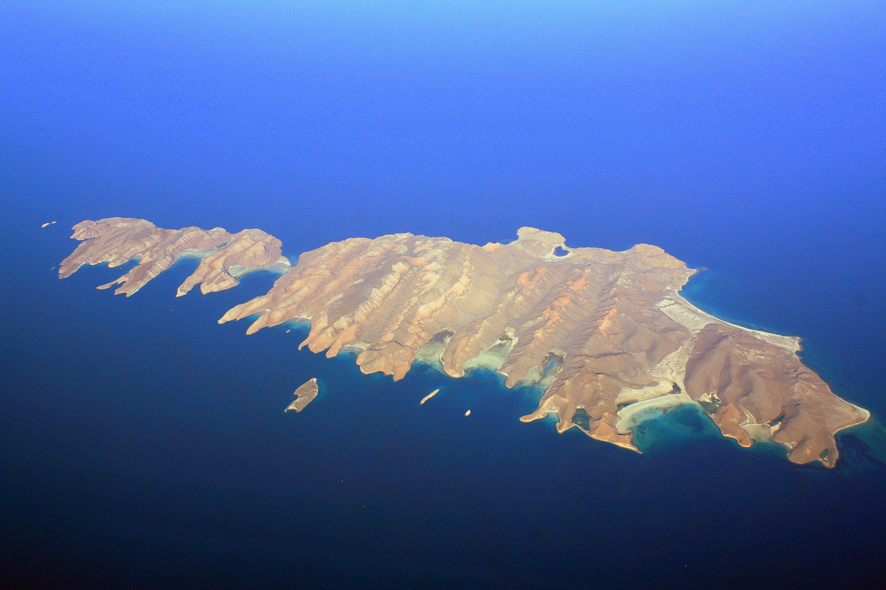
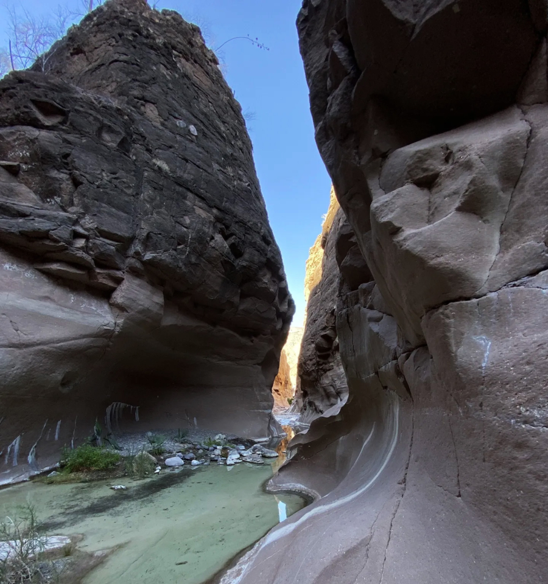
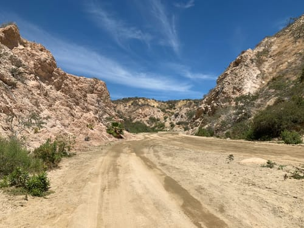

Baja California Sur – Turismo Comunitario
Explora los puntos destacados con un mapa interactivo.
Desplázate para acercarte a cada sitio. Al tocar un ícono del mapa saltarás a su capítulo correspondiente.

Isla Espíritu Santo
Considerada Patrimonio Natural de la Humanidad desde 2007. Posibilidad de nadar con lobos marinos y buceo en zonas someras.
Bahía de Magdalena
Bahía protegida con llegada de ballena gris en invierno y bosques de mangle de gran importancia biológica.

Cerro El Pilón
Imponente cerro de ~400 m que enmarca La Purísima y San Isidro; con historia misional jesuita.

Cañón del Mezquite
El rincón más asombroso de la Sierra de la Giganta: paredes escarpadas, pozas de agua dulce y oasis.
Cañón de Costa Azul
Formación espectacular cercana a San José del Cabo; paisaje seco con vegetación emergiendo entre rocas.
